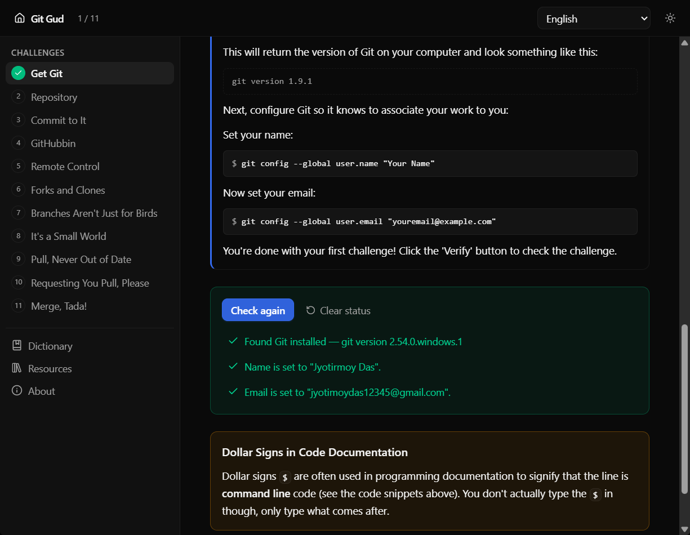
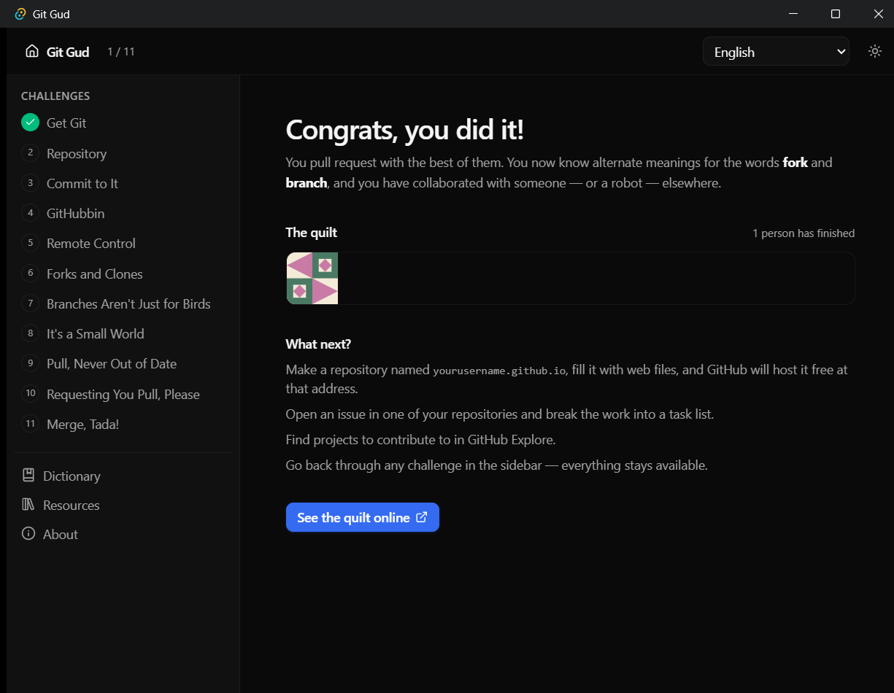

Learn Git by actually using it.
Sixteen hands-on challenges in your real terminal, checked against real Git and GitHub.
Free and open source · 2.9 MB installer

Start at the terminal, end with a pull request.
Most tutorials assume you already live on the command line. Git Gud starts before Git, in the window Git lives in.
The Terminal
The black window, and how to talk to it.
- 1Meet the Terminal
- 2Command Performance
Files & Folders
Finding your way around, and making things.
- 3You Are Here
- 4There and Back Again
- 5Make It So
Git & GitHub
Version control, and sharing your work.
- 6Get Git
- 7Repository
- 8Commit to It
- 9GitHubbin
- 10Remote Control
- 11Forks and Clones
- 12Branches Aren’t Just for Birds
- 13It’s a Small World
- 14Pull, Never Out of Date
- 15Requesting You Pull, Please
- 16Merge, Tada!
Real tools, not a simulation.
Every challenge runs against your machine and your GitHub account. Finishing one means it genuinely worked — you keep the repos, the branches, and the green squares.
-
Your terminal, your Git
Challenges verify with
gititself, never a built-in fake. -
Your GitHub account
Fork, branch, invite a collaborator, open a real pull request.
-
Checks that explain themselves
Each result names what it looked at — including the shell history file it read.
-
A payoff with your name on it
The final challenges stitch your own patch into a public quilt.

Finish with your patch on the wall.
The last challenges walk you through forking, branching, collaborating, and merging — and your reward is a generated patch with your name on it, hanging in a public quilt next to everyone who finished before you.
Learn in your own language.
All sixteen challenges, the dictionary, and the interface are fully translated — the app follows your system language automatically.
If you don’t like something, fork it.
Tauri + React, no bundled browser engine — that’s the whole 2.9 MB secret. Clone it, restyle it, teach with it.
Your terminal is waiting.
Free, open source, and sixteen challenges long. Install it and finish challenge one today.